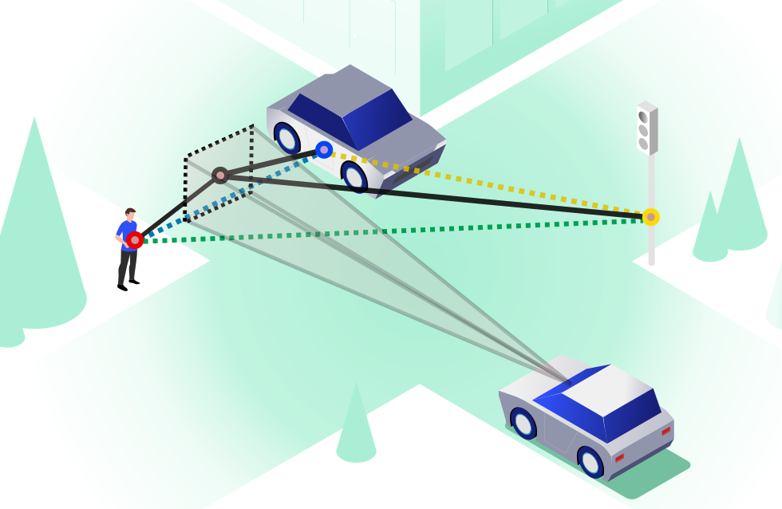

Affinity Relation Transformer + Object Density Network

We propose a novel framework for gaze prediction by modeling its spatiotemporal evolution as an active participant in the environment. Our approach leverages graph-based simulation (GBS) to capture complex relationships by representing systems as graphs of objects/agents and their interactions, marking a first for GBS in attention modeling.
A gaze-centric traffic graph (right), processed by our Affinity Relation graph Transformer (ART), captures dynamic interactions between driver gaze and traffic objects, injecting relationship information into message passing. An Object-based Density Network (ODN) then predicts next-step gaze distributions, accounting for the object-centric nature of attention shifts.

Traffic scenes as heterogeneous graphs with nodes representing road structure, driving-relevant objects, and driver gaze.